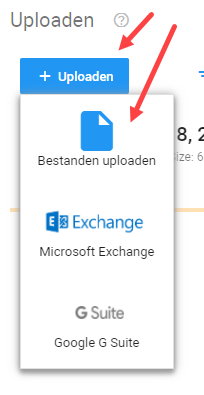
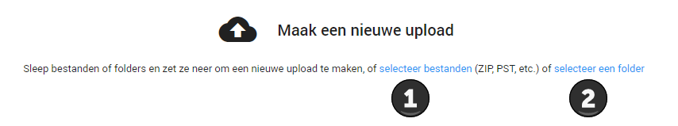
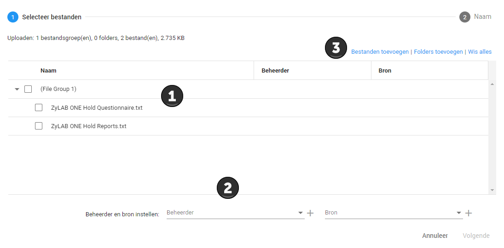

Om uw data te uploaden in ZyLAB navigeert u naar het Upload Dashboard. Hier kunt u links boven op de knop + Uploaden klikken vervolgens klikt u op de knop Bestanden uploaden.

U kunt de gewenste bestanden direct in het venster slepen om deze te uploaden of u kunt bij 1 de documenten selecteren of bij 2 gelijk een hele map uploaden naar ZyLAB ONE:

Hierna moet u voor de upload selecteren wie de beheerder (eigenaar) is en vanuit welke bron de documenten komen, bijvoorbeeld uit de mailbox (bron) van een medewerker (beheerder). U kunt bij 1 selecteren van welke documenten u de eigenaar en vindplaats wilt selecteren. Als u dit wilt instellen voor alle documenten uit het lijstje hoeft u geen documenten aan te klikken (geen documenten aangevinkt staat gelijk aan alle documenten aangevinkt). Bij 2 selecteert u vervolgens de eigenaar en vindplaats. Bij 3 kunt u nog additioneel bestanden uploaden of bestanden wissen. Wanneer elk bestand klaar is klikt u, rechtsonderin, op Volgende (pas beschikbaar als u een beheerder en bron heeft geselecteerd). Elk bestand dient een beheerder en bron te hebben.

Vervolgens voert u de gewenste naam in voor de upload. ZyLAB genereert automatisch voor u een bestandsnaam op basis van de gebruiker die de upload uitvoert en de huidige tijd en datum. Vervolgens klikt u op de knop Start. De documenten worden nu geüpload.